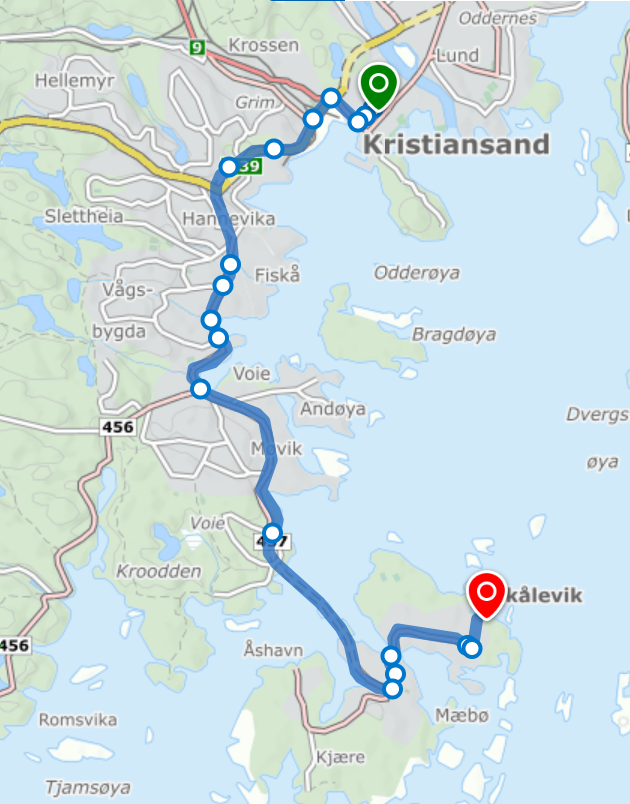
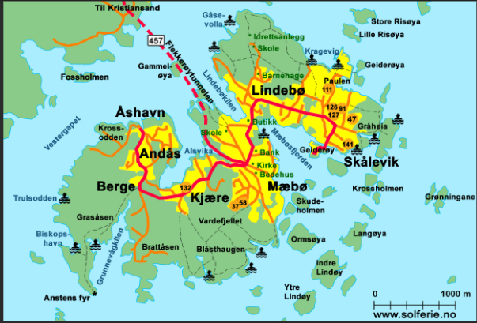

Årekjerret 93 ist etwa 20 Minuten mit dem Auto vom Stadtzentrum von Kristiansand entfernt.
Nehmen Sie die E39 von Kristiansand in Richtung Stavanger, dann in Richtung Vågsbygd. Folgen Sie der Autobahn 456 in Richtung Vågsbygd für ca. 6,7 km.
Fahren Sie durch den Tunnel nach Flekkerøya – ca. 2,3 km lang.
Nehmen Sie im Kreisverkehr auf Flekkerøya die 3. Ausfahrt nach Skålevik. Folgen Sie dieser Straße so weit wie möglich – das heißt, bis sie sich verengt. Biegen Sie ganz am Ende der Straße links nach Årekjerret ab.
Folgen Sie Årekjerret bis zum Ende und biegen Sie rechts einen kleinen Hügel hinauf. Hier befindet sich der private Parkplatz, der zum Ferienhaus gehört. Parken Sie das Auto in der Nähe der Garage in Richtung der Treppe hinauf zum Årekjerret 93.
Årekjerret 93 ist die Adresse des Ferienhauses, das sich direkt über der Garage auf der linken Seite befindet.

Der Weg von Kristiansand zum Haus.
Übersichtskarte
Übersichtskarte von Flekkerøya

Blick aus dem Haus auf die Insel Vasskjær und die Bootsstraße nach Kristiansand.Der Leuchtturm von Oksøy – nur eine kurze Bootsfahrt entfernt.